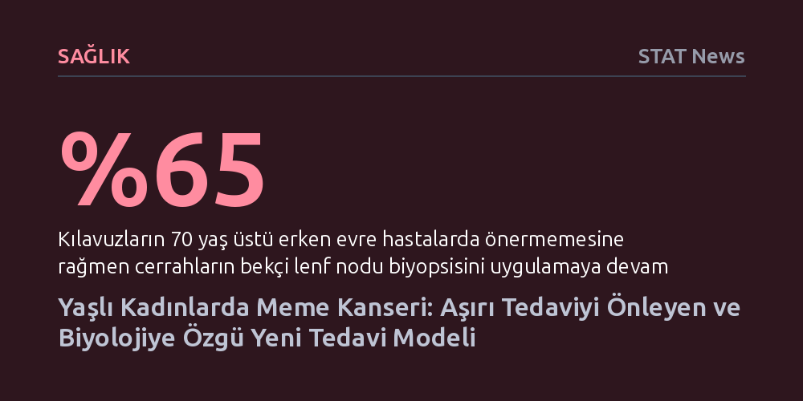

SAGLIK · STAT News · 2026-10-09
Yaşlı kadınlarda meme tümörlerinin kendi östrojenini ürettiği ve ameliyat yerine kanda dolaşan tümör DNA'sıyla güvenle takip edilebileceği saptandı. Araştırma, basit klinik uyarılarla gereksiz lenf biyopsilerinin yarıya indirilebileceğini ve hastalığın daha hafif yöntemlerle yönetilebileceğini gösteriyor.
Kanser tedavisinde herkese aynı yoğunlukta müdahale etme anlayışının yaşlı hastalarda faydadan çok zarar getirdiğini ve tümör biyolojisine göre müdahaleyi azaltmanın daha etkili olabileceğini gösteriyor.

Meme kanseri teşhisi konulan hastaların neredeyse yarısı 65 yaş ve üzerinde, yaklaşık beşte biri ise 75 yaşın üstünde bulunuyor. Yaş bu denli belirleyici bir risk faktörü olmasına rağmen, klinik ilaç araştırmalarında ileri yaştaki kadınlar sistematik biçimde dışlanıyor; araştırmalara katılanların yalnızca yüzde 9'u 65 yaş üzerinde. Bu durum, onkologların elinde yaşlı bireylerin biyolojisine ve ilaçların bu yaş grubundaki davranışına dair son derece kısıtlı rehber kalmasına yol açıyor.
Kılavuz ve verilerin yetersizliği, hekimlerin genç hastalarda geçerli olan standart ve agresif protokolleri yaşlılara da aynı şekilde uygulamasına neden oluyor. Oysa ileri yaştaki tümörlerin büyüme hızı, bağışıklık ortamı ve hormonal dinamikleri genç hastalardan belirgin şekilde farklı işliyor. Sonuç olarak birçok yaşlı hasta, kendilerine fazladan bir sağkalım avantajı sağlamayan ağır cerrahilere ve yıpratıcı tedavilere maruz bırakılıyor.
Cerrahi pratiklerdeki bu aşırı müdahalenin en somut örneği, koltuk altındaki lenf dokusunun çıkarıldığı bekçi lenf nodu biyopsisinde yaşandı. Cerrahi Onkoloji Derneği 2016 yılında 70 yaş ve üzerindeki erken evre hastalarda bu biyopsinin gereksiz olduğunu duyurmasına rağmen, cerrahların yaklaşık yüzde 65'i işlemi uygulamayı sürdürdü. Hastanın yaşam süresini ya da kanserin nüksetme riskini olumlu etkilemediği bilinen bir cerrahiyi hekimlerin refleks olarak sürdürmesi, yerleşik klinik alışkanlıkların kırılmasının ne kadar zor olduğunu ortaya koyuyordu.
Araştırmacı Neil Carleton ve çalışma arkadaşları, cerrahların bu refleksini değiştirmek için elektronik hasta kayıt sistemine basit bir dijital uyarı yerleştirdi. Yaş ve evre kriterini karşılayan bir hasta randevuya geldiğinde ekranda beliren bu nazik hatırlatma, biyopsi oranlarını bir yıl içinde neredeyse yarı yarıya düşürdü. Sürece katılan cerrahlardan birinin belirttiği gibi, "Eksiksiz bakım her zaman daha iyi bakım anlamına gelmiyor" gerçeği bu sayede klinik pratiğe yansıdı.
Klinik alışkanlıkların ötesinde, yaşlı kadınlardaki tümörlerin biyolojisi de hekimlerin karşısına şaşırtıcı bir paradoks çıkarıyor. İleri yaştaki meme kanserlerinin yüzde 90'ından fazlası östrojen reseptörü pozitif nitelik taşıyor; yani büyümesi östrojene bağlı. Ancak menopoz sonrasında kadınların kan dolaşımındaki östrojen seviyesi hızla düşüyor. Kanda neredeyse hormon bulunmazken bu tümörlerin nasıl olup da çoğalmaya devam ettiği sorusu uzun süredir yanıtsızdı.
Carleton ve ekibi, hasta dokularındaki gen ifadelerini inceleyerek tümör çevresinde kandaki zayıf estronu çok daha güçlü bir form olan estradiole dönüştüren kritik bir enzimin fazlaca üretildiğini keşfetti. Başka bir deyişle tümör, vücutta hormon azalsa bile kendi yerel fabrikasını kurup büyümesini besleyecek östrojeni kendisi üretiyordu. Laboratuvar ortamındaki modellerde bu enzimin baskılanması, tümörün hormon üretimini tamamen durdurdu. Bu bulgu, mevcut sistemik hormon baskılayıcıların yarattığı şiddetli eklem ağrısı ve yorgunluk gibi yan etkileri bertaraf edebilecek, jel ya da bant formunda yeni ve yerel tedavi hedeflerinin önünü açıyor.
Araştırmacılar geçmiş verileri tararken, 70 yaş üstünde ameliyatı reddedip yalnızca hormon tedavisi alan kadınların yüzde 91'inde tümörün altı yıl boyunca kontrol altında kaldığını ve kanserden ölüm oranının sadece yüzde 3 olduğunu fark etti. Buradan hareketle, ameliyatsız tedavi gören kadınların durumunu evlerinden çıkmadan izleyebilecekleri bir model geliştirdiler. Kanda serbest dolaşan tümör DNA'sını (ctDNA) ölçen bu yöntem, hastaların evine giden mobil kan alma ekipleriyle uygulandı.
Sonuçlar son derece çarpıcıydı: Altıncı ayda kanında tümör DNA'sı saptanan hastaların hastalığının ilerleme olasılığı diğerlerine göre 30 kat daha yüksek çıktı; tedaviden önce kanında tümör DNA'sı saptanmayan hiçbir hastada ise ilerleme görülmedi. Bu takip modeli, her hastayı ameliyat masasına yatırmak yerine kimin sadece bir hapla evde takip edilebileceğini, kimin ise yoğun cerrahiye ihtiyaç duyduğunu net bir biçimde ayırt etmeyi sağlıyor. Kanser tedavisini sürekli hastane ziyaretleri gerektiren bir krizden çıkarıp yönetilebilir kronik bir sürece dönüştürme fikri artık somut bir zemine oturuyor.